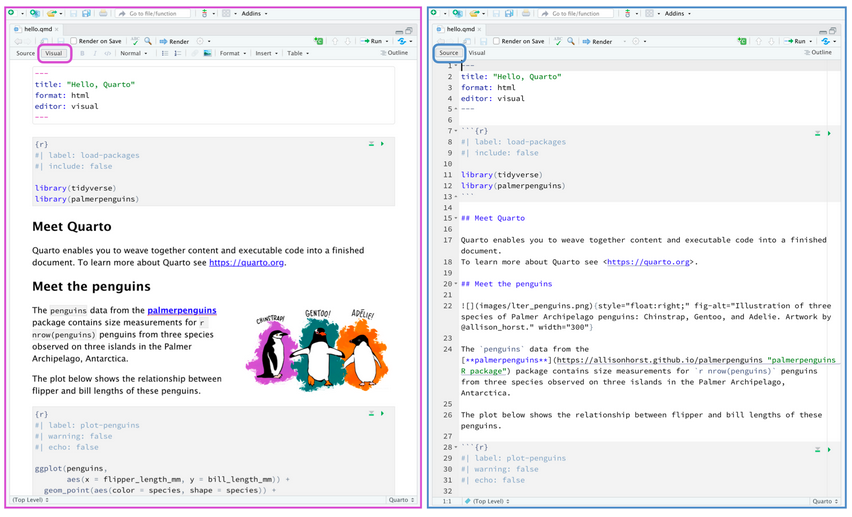

Quarto
Met Quarto ben je in staat om inhoud en code naar verschillende wetenschappelijke producten om te zetten. Dat kunnen artikelen, rapporten, blogs, websites of b.v. dashboards zijn. Met Quarto kun je ook boeken maken in verschillende vormen (html, pdf, word of epub). In dit blog laat ik jullie zien hoe je een html-boek kunt maken. Om meer over Quarto te leren verwijs ik je naar de Quarto-website.
TT_book
Dit is overigens het boek dat ik met Quarto heb gemaakt TT-book, het eindresultaat van deze tutorial. Al het materiaal (teksten, plaatjes, ondersteunend materiaal) vind je op Github.
Achtergrond van het boek
De NSC-R werkgroep organiseert regelmatig bijeenkomsten om medewerkers en betrokkenen te informeren over ontwikkelingen op het terrein van moderne data-analyse met inzet van het programma R. Het werk van deze werkgroep vind je op NSC-R Workshops.
Onderdeel van deze workshops zijn NSC-R Tidy Tuesday-bijeenkomsten. Iemand leidt mensen door een bepaald analysescript en laat zo zien wat en hoe je de analyse met R kunt uitvoeren. In de periode januari 2022-januari 2023 zijn verschillende van deze bijeenkomsten georganiseerd. In enkele stappen heb ik deze workshopteksten naar een boek omgezet en dit boek heb ik als product via internet gepubliceerd. Een aantal stappen zijn essentieel:
Allereerst heb ik de verschillende scripts genomen en in
Quartoomgezet (Tekstschrijven met Quarto).
Vervolgens heb ik het boekformat van
Quartobinnengehaald en dat als uitgangspunt voor dit boek genomen. Vervolgens heb ik van de workshopteksten hoofdstukken gemaakt, ik heb er een inleiding en samenvatting aan toegevoegd en ik heb de referenties eraan toegevoegd (Creëren van een boek).Belangrijk is dat je het project op GitHub zet (Werken vanaf GitHub).
Als je het project als repository of GitHub heb staan, kun je het product vervolgens via
Netlifypubliceren (Publiceren).Daarna heb ik de opmaak nog wat aangepast (Opmaak).
Hieronder ga ik wat uitgebreider op de vijf stappen in.
1. Tekstschrijven met Quarto
Quarto is de nieuwe versie van R Markdown, het populaire pakket van R om wetenschappelijk te kunnen schrijven. R Markdown is er nu tien/twaalf jaar en blijft bestaan (ook ik zal het blijven gebruiken). Echter, Quarto heeft enkele kenmerken dat deze innovatie interessant maakt. Een van de voordelen is b.v. dat je er niet alleen in RStudio mee kunt werken maar ook met Python of VS Code. In deze tutorial wordt gebruik gemaakt van RStudio. In de nieuwe versies van RStudio is Quarto al opgenomen (dus dat hoef je niet apart te installeren). Als je met R Markdown werkt moet je steeds een ander pakket binnenhalen (voor het maken van een blog weer een ander pakket dan voor een boek). Bij Quarto hoef je dat niet steeds te doen. Nog een ander voordeel, ook het werken met Quarto zelf heeft enkele voordelen (bv dat je snel kunt wisselen tussen resultaat (Visual) en code (Soure) bv).

Quarto-documenten sla je op als .qmd-documenten.Verder werkt het veelal het zelfde als .rmd-documenten. Ook dit systeem werkt met Markdown tekst. De code chunks schrijf je wel net wat anders.Je begint {r} en de opdracht zet je eronder met #| zols hieronder.
#| warning: false
#| echo: true
#| label: fig-agecat
#| fig-cap: "Age categories and their numbers"
#| cap-location: marginUitgebreide informatie vind je over Schrijven en coderen op de website van Quarto. Je kunt ook de teksten van het boek nemen en zien hoe ik dit heb gedaan.
2. Creëren van een boek
Net als andere wetenschappelijke producten (zoals artikelen en rapporten) kun je ook boek in verschillende formaten creëren: html, pdf, word of epub. In deze tutorial heb ik een boek in html-formaat gemaakt.Crëer eerst binnen RStudio een nieuw project en kies voor New Directory.
Vervolgens kies je voor Quarto Book.
En dit boek geef je dan een naam, in ons geval TT_book
Als je dit project opent, zie je dat er verschillende bestanden zijn binnengehaald.
Als je dit project vervolgens opent en het document index.qmdrendert, zal het bestand -book worden toegevoegd.
Als je dan _book/index.html opent, zie je het resultaat.
Dit project heb ik als uitgangspunt genomen en vervolgens heb ik de workshopsbestanden, de inleiding, de samenvatting en de referenties hieraan toegevoegd. Dat moet je steeds stap voor stap doen. Maar hier zie je hoe de projectmap er uiteindelijk uitziet. Belangrijk is wel dat je het yaml-document goed aanpast en dat je daarin omschrijft wat er aan hoofdstukken in het boek moet worden opgenomen.
Zo ziet dan het hele boek eruit, met een intro, tien hoofdstukken en een samenvatting. Over andere zaken zal ik straks nog wat bij de opmaak opmerken.
Belangrijk is wel dat je het yaml-document aanpast aan de opzet die jij wilt maken.Vergelijk zelf het yaml-document dat je krijgt als je Quarto book opent en de yaml voor dit TT_book. Alle hoofdstukken moeten in het yaml-document zijn omschreven. Hier zie je het yaml document. Bij de opmaak zeg ik hier nog wat over. Hier zie een deel van yaml-opzet. Let voor op de hoofdstukken. Bij de opmaak kom ik nog op dit document terug.
3. Vanuit GitHub werken
Ook voor deze klus is het belangrijk dat je vanaf GitHub werkt. Dat is het versie controle programma waarover ik al eens vaker heb geschreven.Zie bijvoorbeeld hier. Het is belangrijk om stap voor stap te kunnen werken, om alles goed bij te houden (versie-controle), eventueel met anderen in het project te kunnen samenwerken, maar ook om het eindproduct te kunnen communiceren.
Het is natuurlijk goed als je vanaf het begin het project in GitHub hebt opgeslagen. In dat geval begin je met het openen van een nieuwe repository om GitHub, koppel je het met jouw lokale projectmap en voeg je er nieuwe bestanden aan toe. Je zorgt steeds dat de nieuwste versie op GitHub staat. Je moet dan wel een account daar hebben.
Het kan ook zijn dat je het project al op jouw lokale computer hebt staan en het vervolgens op GitHub moet plaatsen. In dat geval kun je ook het pakket usethis gebruiken. [Usethis](https://usethis.r-lib.org/. Dat pakket moet je dan wel hebben geinstalleerd en geöpend in de projectmap van het boek.
Start met het commando
usethis::use_git()Hij vraagt dan of je commit your changes toestaat en herstart dan RStudio en accepteer dit.
Geef dan het volgende commando om een Github repository te creëren om alles op GitHub op te slaan.
usethis::use_github()Nogmaals, alles moet op GitHub staan voordat je het boek kunt publiceren.
4. Publiceren
Voor het publiceren van het boek heb ik het programma Netlifygebruikt. Ook hier moet je een account hebben (wel gratis net als GitHub). Vervolgens moet je ervoor zorgen dat ingelogd bent.
Zeg dan dat je een nieuwe site wilt openen (je moet het boek in dit geval als nieuwe site zien).
.
Bij het inloggen kun je het beste jouw GitHub account gebruiken. Verbind het met jouw GitHub account
Kies uit jouw repositories in dit geval de TT-repository (de projectmap waarin alles zit)
Kies jouw settings uit. In dit geval is -book de basisrepository en is _book/ de directory. Klik op deploy (publiceren).
Vervolgens kun je ook de naam veranderen (van de onbegrijpelijke Netlifynaam naar jouw herkenbare TT_book naam).
De naam is dus veranderd in TT_book en uiteindelijk is dit het adres geworden dat je van Netlify krijgt: https://ttbook.netlify.app en dit is het resultaan
5. Opmaak
Referenties
Heel kort iets over referenties. Zelf werk ik met het Zotero om referenties in op te slaan. Als je dat gedaan hebt, moet je dit bestand vervolgens als bib-bestand opslaan. Als je in de map van TT_book kijkt, vind je het referencestt.bib bestand. Daarin zitten alle referenties van de workshops. In de tekst zelf zet je dan bv @bernasco_nsc-r_2022 tussen haakjes ([]) als je wilt verwijzen naar een bijeenkomst die Bernasco in 2022 heeft gegeven. In de _yml schrijf je dan dat de bibliografie te vinden is in het bestand referencestt.bib.
Referenties kunnen op verschillende manieren beschreven worden. Op internet kun je verschillende stijlen vinden citation styles. Hier is gekozen voor de apa stijl (apa.csl). Dit kun je als document binnenhalen en daar kun je in jouw yml-bestand naar verwijzen (csl:apa.csl).
Stijl
De stijl van het product kun je op verschillende manieren defiëren. In Quarto zelf zitten er verschillende thema’s waar je voor kunt kiezen. In mijn geval heb ik voor cosmo gekozen. Dat vermeld je dan in het yml-bestand. Je kunt in datzelfde bestand ook lettergroottes, -types, achtergrondkleuren of andere stijlaspecten definiëren. Wat je ook kunt doen is een apart css-bestand toevoegen waarin je de stijl van, in dit geval boek, definieert. Ook over dit onderwerp zou veel meer te vertellen zijn, maar dat laat ik voor nu even zitten.
Tot slot
Het maken van een boek lijkt heel erg op het maken van een blog of een website. Als je het een kunt, wordt het andere product makkelijker om te maken. Werk vanuit een project met verschillende mappen; zorg ervoor dat je altijd met GitHub werkt en doe alles stap voor stap. Begin met een klein project en werk het daarna uit. Om te publiceren heb ik tot nu toe met Netlify en GitHub Pages gewerkt. Quarto heeft ook een eigen systeem om te publiceren (Quarto Pub) en dan is er nog Posit Connect en zijn er nog allerlei andere diensten waarmee je jouw producten onder de aandacht kunt brengen. Later zal ik nog eens een blog schrijven over deze mogelijkheden.